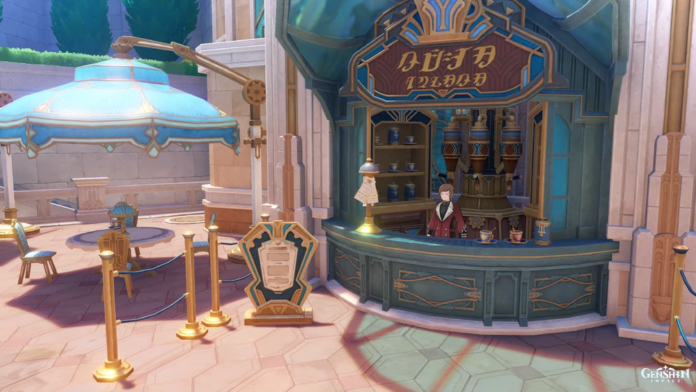

Dining
In Fontaine we house many forms of cuisine, and we have our fair share of more sophisticated experiences through cafes. Take a scroll to some of our most popular places to dine.
Café Lutece
This stands as one of the most popular cafés in the Vasari Passage, allowing you to enjoy delicious coffee and snacks. They experience all forms of customers from all walks of life. The owner, Arouet, encourages all their customers from all backgrounds to freely and comfortably discuss philosophy and other topics as they enjoy their coffee. Anyone may participate, and no topic is forbidden, with the exception of "death."